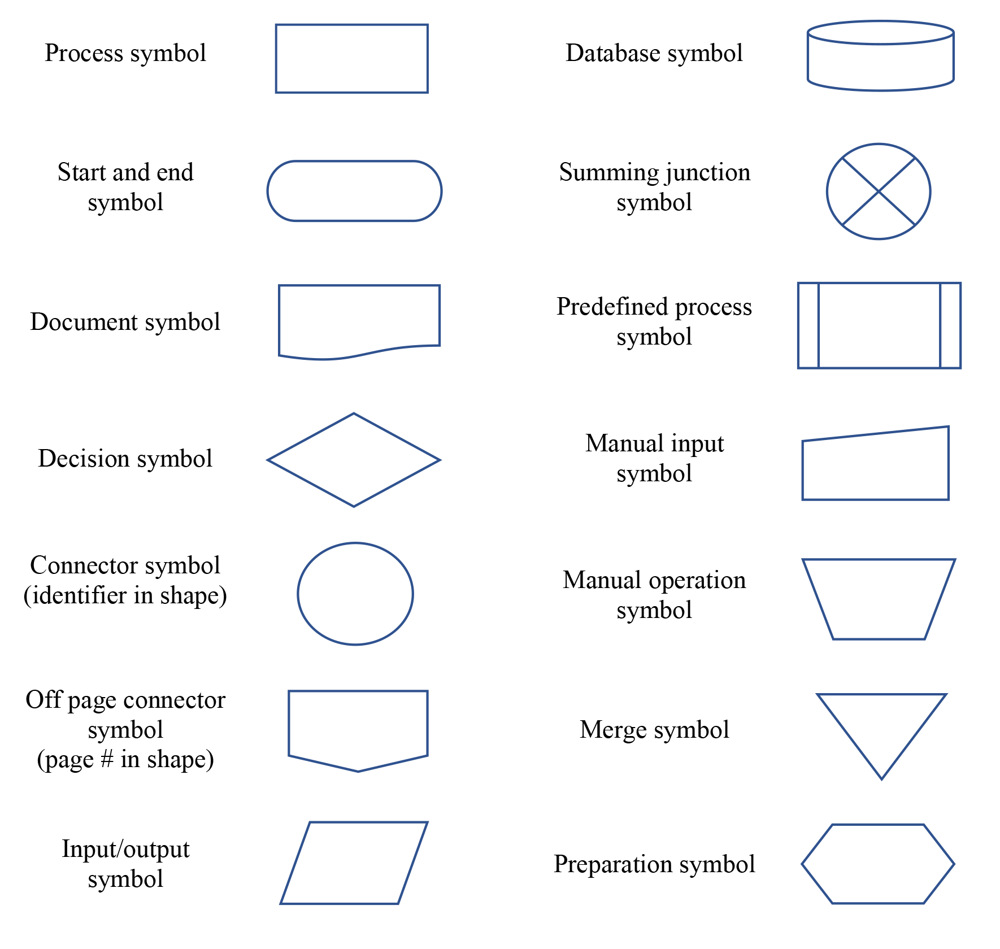

A flow chart is process management in diagram form. It includes the steps in a process and their sequence. Below is an example from Wikimedia:
Flow charts help us map business processes. This in turn, helps us all understand and clarify processes. In some cases the flow charts are kept intentionally basic, while in other circumstances they can become highly complex. As Walsh-Kelly notes, "Two types of flow charts are utilized in quality improvement. A high-level flowchart, outlining 6-10 major steps, gives a high-level view of a process. These flowcharts display the major blocks of activity, or the major system components, in a process. These charts are especially useful in the early phases of a project and help to set priorities for improvement work. A detailed flowchart is a close-up view of the process, typically showing dozens of steps. These flowcharts make it easy to identify complexity, excessive steps, etc. in a process and should be used when you want to standardize or make changes in the process." (2015)
In creating a flow chart, there are some standard symbols that are used:

You can right click to open a larger version of the standard symbols. To review even more flow chart symbol options, view flow chart symbols and notation as described by Lucidchart.
See a real life example of a flow chart that the author developed to help address and identifty process issues in the tenure process used at her institution. She used Excel so she could compare the process as written in policy to the process actually in place. Items in red italics were identified as being lacking in policy but necessary for the process to function: Tenure process flow chart (pdf)
Not only can flow charts help us highlight areas for improvement in a business process caused by unnecessary steps, gaps, and barriers, they can also help us: